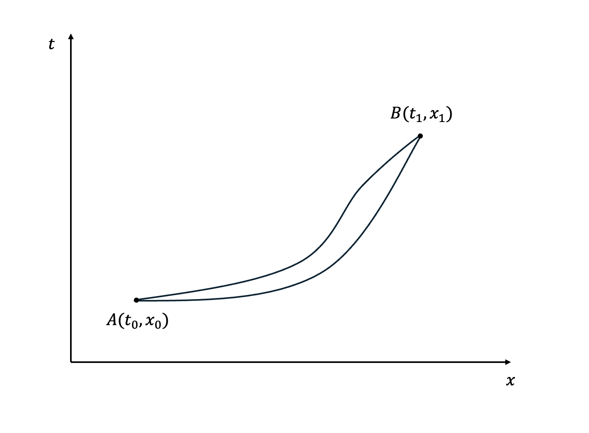
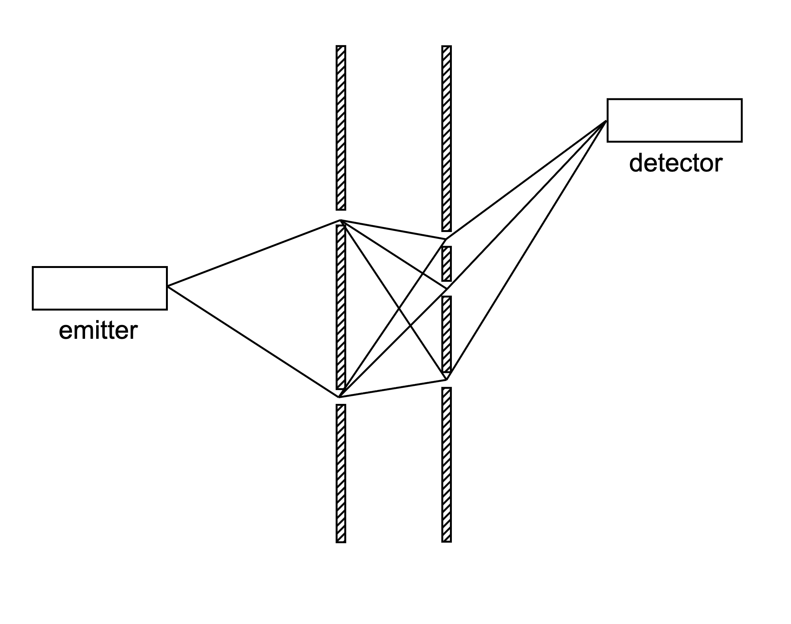
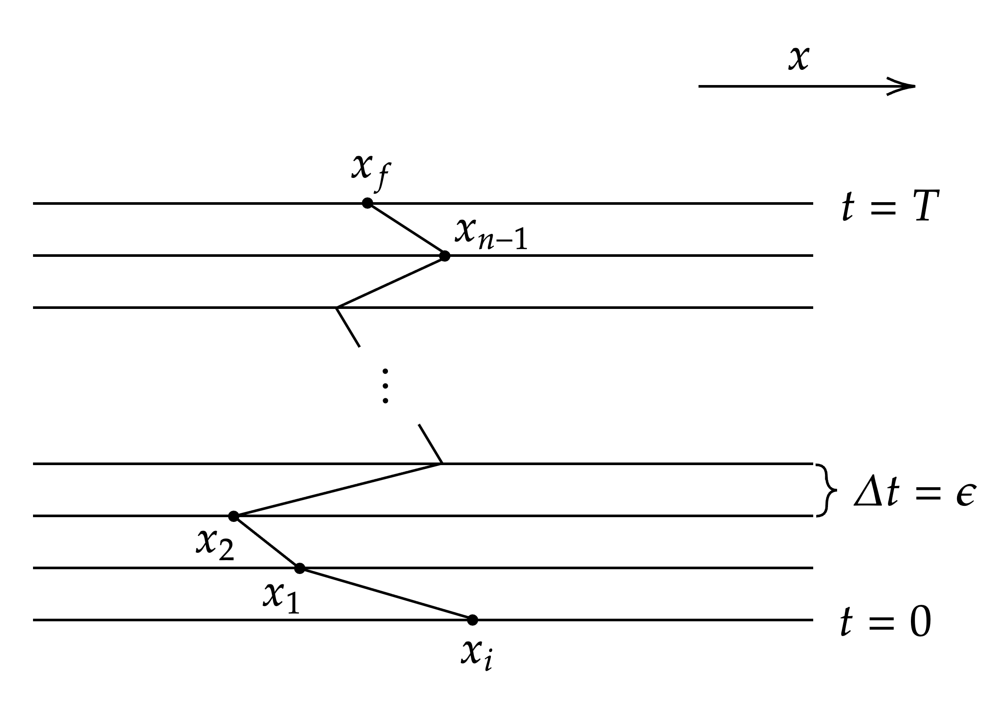
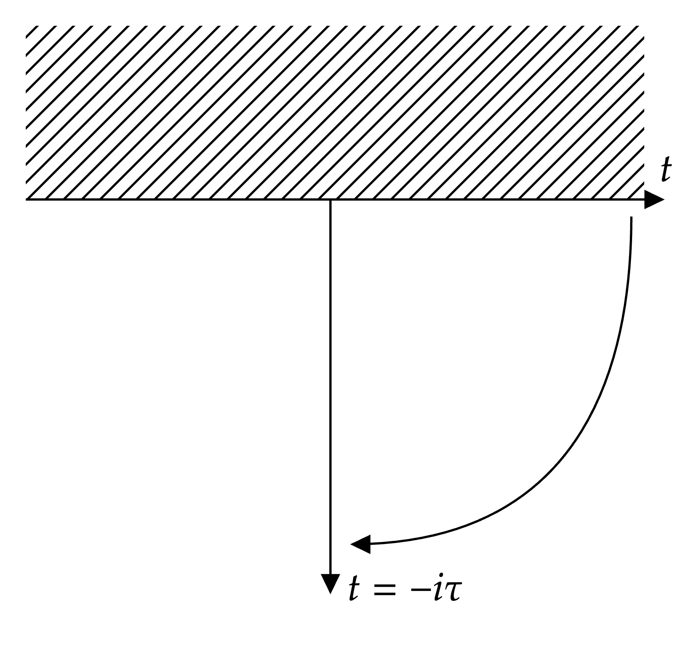
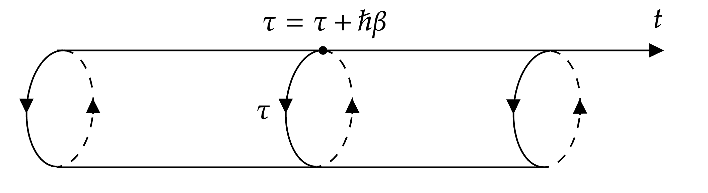

Introduction
In this paper, we introduce the path integral formalism (sometimes referred to as the functional integral) of quantum mechanics due to Richard Feynman . Although this formalism is fundamentally equivalent to the Schrödinger equation, it provides many insights into quantum mechanics and also quantum field theory . We will also introduce the connection of a quantum system with a statistical system.
In this paper, we work in one spatial and one temporal dimension. The generalisation to four-dimensional spacetime is straightforward.
Prerequisites
Before introducing the path integral formalism, we will give a brief introduction to the prerequisites required. Note that we have hidden some technicalities and subtleties in the following introductions, which will not be important for the purpose of this paper; for further details, see, for example .
The Wavefunction and Schrödinger Equation
The wavefunction, $\psi(x,t)$, is the most important quantity in quantum mechanics. Its time evolution is governed by the Schrödinger equation: \[i\hbar\frac{\partial\psi(x,t)}{\partial t} = H\psi(x,t), \tag{1}\] where $H$ is the Hamiltonian operator (energy operator). An operator is a map that takes one vector or function to another.
The wave function is complex, so it is not physical. The physical quantity we are interested in is the modulus square of it; that is \[P(x,t) = \abs{\psi(x,t)}^2,\tag{2}\] which we interpret as the probability density of a particle at a given position, $x$. For the probability interpretation to hold, we require \[\int^\infty_{-\infty}dx\, P(x,t) = 1.\tag{3}\] This can always be satisfied by rescaling the wavefunction as long as \[\int^\infty_{-\infty}dx\,\abs{\psi(x,t)}^2\tag{4}\] is finite for all $t$. Thus, we require the time evolution of the wavefunction to be bounded. This is an important property to keep in mind.
Just as for all complex function, we define the inner product of wavefunctions as \[\langle\phi,\psi\rangle = \int^\infty_{-\infty}dx \, \phi^*\psi,\tag{5}\] where $\phi$ is a wavefunction.
The Schrödinger equation can be solved by separation of variables. Let $\psi(x,t)=u(x)T(t)$, we find the general solution to (1) to be \[\psi(x,t) = \sum_nc_nu_n(x)e^{-iE_nt/\hbar},\quad c_n\in \mathbb{C}\tag{6}\] where \[Hu_n(x) = E_nu_n(x).\tag{7}\] We have assumed the boundary condition would impose a discrete energy spectrum above. If the energy spectrum is continuous, the sum will be replaced by an integral.
Bra–ket notation
The bra-ket notation is very powerful when dealing with general quantum problems. A quantum state is denoted as $\ket{\psi}$ (pronounced as “ket"), which lives in the Hilbert space, $\mathcal{H}$.
The Hilbert space is a vector space, and thus, we can decompose any general state, $\ket{\psi}$, in terms of a set of complete basis functions in the Hilbert space. In particular, we can decompose into the 1-dimensional spatial basis, $\ket{x}$, with $x\in \mathbb{R}$: \[\ket{\psi} = \int^\infty_{-\infty}dx\,\psi(x)\ket{x}, \tag{8}\] where $\psi(x)$ is just a complex number labelled by a continuous index, $x$.
The inner product is defined as \[\braket{\phi}{\psi}, \tag{9}\] where $\bra{\phi}$ can be roughly thought of as the “complex conjugate" of $\ket{\phi}$. Similarly to (8), we can again decompose $\bra{\phi}$ as \[\bra{\phi} = \int^\infty_{-\infty}dx\,\phi^*(x)\bra{x},\tag{10}\] where we have chosen the weighting factor to be $\phi^*(x)$ for reasons that will soon become obvious.
Let us choose the basis, $\ket{x}$, to be orthonormal so that \[\braket{x}{y} = \delta(x-y).\tag{11}\] Now, take the inner product of $\ket{x}$ and $\ket{\psi}$, we find \[\braket{x}{\psi} = \int^\infty_{-\infty}dx'\,\psi(x')\braket{x}{x'} = \int^\infty_{-\infty}dx'\,\psi(x')\delta(x-x') = \psi(x).\tag{12}\] The weighting function, $\psi(x)$, is the quantum state in the position space representation, which is just the wavefunction. Similarly, we have $\braket{\phi}{x} = \phi^*(x)$.
Now, putting (8) and 9, we obtain \[\braket{\phi}{\psi} = \int^\infty_{-\infty}dx'\int^\infty_{-\infty}dx\,\psi(x')\phi^*(x)\braket{x}{x'} = \int^\infty_{-\infty}dx\,\phi^*(x)\psi(x),\tag{13}\] where we have recovered the definition of the inner product between two complex functions.
Note that the above is equivalent to inserting the matrix \[\int^\infty_{-\infty}dx\ket{x}\bra{x}\tag{14}\] into the inner product. That is \[\braket{\phi}{\psi} = \bra{\phi}\left(\int^\infty_{-\infty}dx\ket{x}\bra{x}\right)\ket{\psi} = \int^\infty_{-\infty}dx\braket{\phi}{x}\braket{x}{\psi}.\tag{15}\] Thus, the matrix inserted must be equivalent to the identity matrix, $\mathbf{1}$: \[\mathbf{1} = \int^\infty_{-\infty}dx\ket{x}\bra{x}. \tag{16}\] This is known as the resolution of the identity, and it will play an important role in the derivation of the path integral formalism.
The evolution operator
Consider a time evolution operator, $U(t)$, that acts on a quantum state: \[\ket{\psi;t} = U(t)\ket{\psi;0}.\tag{17}\]
Recall the general solution to the time-dependent Schrödinger equation, \[\psi(x,t) = \sum_nc_nu_n(x)e^{-iE_nt/\hbar},\tag{18}\] where $u_n$ is the energy eigenfunction corresponding to the eigenvalue $E_n$, and $c_n$ is a complex Fourier coefficient. This can be equivalently written as \[\braket{x}{\psi;t} = \sum_n c_n\bra{x}e^{-iE_nt/\hbar}\ket{u_n} = \sum_nc_n\bra{x}e^{-iHt/\hbar}\ket{\psi_n} = \bra{x}U(t)\ket{\psi;0},\tag{19}\] where we have defined \[U(t) \equiv e^{-iHt/\hbar}\tag{20}\] in the last equality, where $H$ is the Hamiltonian operator.
The principle of least action
A lesson we have learnt from optics is that light always travels along the path that extremises the travel time from point $A$ to point $B$. This also seems to be true for all classical particles. A particle in free fall, without any barriers, will fall straight down instead of wiggling around. Thus, it is natural to assume such a principle and see what follows from it.
Let us first consider a spacetime diagram of a particle travelling from $A(t_0,x_0)$ to $B(t_1,x_1)$ in $1+1$ dimensions, as shown in Fig. fig:1. Suppose that we have a quantity, action $S$, which describes the path of the particle. Since the coordinates always depend on time, we can write \[S = \int_{t_0}^{t_1} L\, dt.\tag{21}\] Here $L=L(x,\dot{x},t)$ is the Lagrangian. For simplicity, we assume $L$ to be independent of $t$.

Imposing the principle of least action, \[\delta S = 0, \tag{22}\] we expand \[\delta S = \int_{t_0}^{t_1} \left[ \frac{\partial L}{\partial x}\,\delta x + \frac{\partial L}{\partial \dot{x}}\, \delta \dot{x} \right] dt.\tag{23}\] Using $\delta\dot{x}=d(\delta x)/dt$ and integrating by parts, the boundary term vanishes because $\delta x(t_0)=\delta x(t_1)=0$. Hence, \[\delta S = \int_{t_0}^{t_1} \left[ \frac{\partial L}{\partial x} - \dv{t}\left( \frac{\partial L}{\partial\dot{x}} \right) \right] \delta x \, dt.\tag{24}\] Since the variation $\delta x$ is arbitrary, we obtain the Euler–Lagrange equation: \[\frac{\partial L}{\partial x} - \dv{t}\left( \frac{\partial L}{\partial\dot{x}} \right) = 0. \tag{25}\]
If we define the Lagrangian, $L$, as \[L = \frac{1}{2}m\dot{x}^2- V(x),\tag{26}\] where $T$ and $V$ are the kinetic and potential energy of the system, respectively. Plugging this into (25), we recover Newton's second law: \[\dv{t}(m\dot{x}) = -\dv{V(x)}{x}.\tag{27}\]
The Path Integral Formalism
We are now ready to construct the path integral formalism.
Motivation and assumptions
We start by considering the familiar double-slit experiment. To find the probability of detecting a particle at a given point, we add the quantum amplitudes associated with the two possible paths through the slits.
Now imagine inserting several barriers, each containing many slits. The particle may travel through any allowed route in this sequence, and the total amplitude is obtained by summing over all of these possibilities, as shown in Fig. fig:slits.

To take this idea one step further, let us remove the barriers entirely. This is equivalent to the limit of introducing infinitely many barriers separated by infinitesimal distances, each with an infinite number of slits. In this continuum limit, we need to sum over the contributions of all paths connecting $x_i$ and $x_f$.
Based on this logic, we should not expect any path to be inherently more important than another. To preserve a probability interpretation, the overall amplitude must remain normalisable. If we were to weight paths with a factor that has a non-unitary modulus, the integral over all paths would typically diverge. Therefore, we attach to each path a pure phase factor of unit modulus .
Identifying the Quantum Phase
This can be written as \[\bra{x_f}U(T)\ket{x_i} = \sum_\text{all paths}e^{i\cdot (\text{phase})}, \tag{1}\] where $\bra{x_f}U(T)\ket{x_i}$ is the amplitude for a particle initially at $x_i$ to be found at $x_f$ after a time $T$. Since there is one path for every function $x(t)$ that begins at $x_i$ and ends at $x_f$, the summation over all paths is equivalent to the integration over the whole continuous space of functions. Thus, we can write \[\sum_\text{all paths} \to \int \mathcal{D}x(t),\tag{2}\] where the latter integrates over a set of functions; this is known as a functional integral. A functional, $F[x(t)]$, maps a function to a number.
Now, we need to find out what to use as the phase in (1). Note that the theory should be consistent with classical mechanics in the classical limit. Let us denote the classical trajectory by $x_c(t)$ and the phase by $\mathcal{A}[x(t)]$. The phase must be stationary around the classical path so that nearby contributions add constructively rather than cancelling out due to rapid oscillations. Thus, we require the first-order functional derivative (can be thought of as the normal derivative for our purpose) of the phase to vanish at the classical trajectory: \[\frac{\delta\mathcal{A}[x(t)]}{\delta x(t)}\bigg|_{x(t)=x_c(t)} = 0.\tag{3}\] From Section sec:LC, recall that the classical path satisfies the principle of least action, $\delta S = 0$. Therefore, it is reasonable to identify the phase as the classical action, $S$, up to a constant. By dimensional analysis, the only relevant constant with the same dimensions as $S$ would be $\hbar$. Hence, we can write \[\bra{x_f}U(T)\ket{x_i} = \int \mathcal{D}x(t) e^{iS[x(t)]/\hbar}. \tag{4}\] Here, we have written down the elegant formula for the path integral formalism first proposed by Richard Feynman in 1948 .
Note that the phase oscillates rapidly under the classical limit, $S[x]\gg\hbar$. This means that they effectively cancel out everywhere, except at the extremum, $\delta S = 0$ . This is exactly the requirement of a classical path. Therefore, the path integral reproduces classical mechanics in the large mass limit.
Equivalence with QM
We still need to verify that the path integral formalism is equivalent to the standard QM formalism. To do that, consider a quantum state, $\ket{\psi;0}$, at time $t=0$. As introduced in Section Sec:Bra-ket, this can be written as \[\ket{\psi;0} = \int dx\, \psi(x,0) \ket{x}. \tag{5}\] Note that we will keep the limit, from $-\infty$ to $\infty$, of spatial integrations implicit.
Using the time evolution operator introduced in Section sec:HS, at later time, $T$, the state evolves to \[\ket{\psi;T} = \int dx \, \psi(x,0)U(T)\ket{x},\tag{6}\] and hence the wavefunction at a later time is given by \[\psi(x',T) = \int dx \, \psi(x,0)\bra{x'}U(T)\ket{x}.\tag{7}\] The last object in the integral is known as a propagator, and it is often written as \[K(x,x';T) \equiv \bra{x'}U(T)\ket{x}.\tag{8}\] The propagator evolves a state, $\ket{x}$, to a final state, $\ket{x'}$, after a time, $T$. The propagator can also be viewed as a position eigenstate, $\ket{x}$, at $t=0$, evolving with time in the position basis, $\ket{x'}$. Thus, it must automatically satisfy the Schrödinger equation \[i\hbar\frac{\partial}{\partial T}K(x,x';T) = HK(x,x';T).\tag{9}\]
Note that the functional integral we obtained in (4) is exactly a propagator. Our task now is to show that the two propagators are exactly equivalent. That is, we derive one representation starting from the other. However, the functional integral measure $\mathcal{D}x$ is not well-defined. To evaluate the integral, we need to discretise time; we need to slice time into $n$ pieces with equal separations, $\epsilon$, as shown in Fig. fig:slice. Now, we can label time by an integer, $k$, as $t_k$, and hence we can write the position at time, $t_k$, as $x(t_k)=x_k$, where $x_0 = x_i$ and $x_n = x_f$. To integrate over all paths on this discrete lattice, we need to integrate over all space at a given time, with the two endpoints being fixed. Thus, we can define the integral measure as the $\epsilon \to 0$ limit of \[\int\mathcal{D}(t) = \frac{1}{C}\int\frac{dx_1}{C}\int\frac{dx_2}{C} \cdots \int\frac{dx_{n-1}}{C} = \frac{1}{C}\prod_{k=1}^{n-1}\int\frac{dx_k}{C}, \tag{10}\] where $C$ is a constant we attach to each slice of time.

The evolution operator can be written in terms of $\epsilon$: \[U(T) = e^{-iHT/\hbar} = e^{-iH(n\epsilon)/\hbar} = e^{-iH\epsilon/\hbar} e^{-iH\epsilon/\hbar} \cdots e^{-iH\epsilon/\hbar}.\tag{11}\] We should keep in mind that $H$ here is an operator.
Recall the definition of a propagator. By inserting an identity matrix (16), we find \[\begin{aligned} K(x_i,x_f;T) &= \bra{x_f}U(T)\ket{x_i} = \bra{x_f}e^{-iH\epsilon/\hbar} e^{-iH\epsilon/\hbar} \cdots e^{-iH\epsilon/\hbar}\ket{x_i}\\ &=\bra{x_f}e^{-iH\epsilon/\hbar}e^{-iH\epsilon/\hbar}\cdots e^{-iH\epsilon/\hbar}\left(\int dx_1\ket{x_1}\bra{x_1}\right)e^{-iH\epsilon/\hbar}\ket{x_i}\\ &=\int dx_1\bra{x_f}e^{-iH(n-1)\epsilon/\hbar}\ket{x_1}\bra{x_1}e^{-iH\epsilon/\hbar}\ket{x_i}. \end{aligned}\tag{12}\] Repeating this procedure, we end up with \[K(x_i,x_f;T) = \left(\prod_{k=1}^{n-1}\int dx_k\right)\bra{x_f}e^{-iH\epsilon/\hbar}\ket{x_{n-1}}\bra{x_{n-1}}\cdots\ket{x_1}\bra{x_1}e^{-iH\epsilon/\hbar}\ket{x_i}. \tag{13}\] Therefore, we need to evaluate the infinitesimal propagator \[\bra{x_{k+1}}e^{-iH\epsilon/\hbar}\ket{x_{k}} = K(x_{k},x_{k+1},\epsilon).\tag{14}\] Since $\epsilon$ is small, we can expand the exponential to order-$\epsilon$ \[K(x_{k},x_{k+1},\epsilon) = \bra{x_{k+1}}(1-iH\epsilon/\hbar + \order{\epsilon^2})\ket{x_{k}}.\tag{15}\] Then, inserting another identity matrix in the momentum basis, we obtain \[\begin{aligned} K(x_{k},x_{k+1},\epsilon) &= \bra{x_{k+1}}\left(\int dp_k \ket{p_k}\bra{p_k}\right)(1-iH\epsilon/\hbar + \order{\epsilon^2})\ket{x_{k}} \\ &= \int dp_k \braket{x_{k+1}}{p_k}\bra{p_k}(1-iH\epsilon/\hbar + \order{\epsilon^2})\ket{x_{k}}. \end{aligned}\tag{16}\] Recall the momentum eigenstate in the position basis, $\psi_p(x)$, is given by \[\psi_p(x) = \braket{x}{p} = \frac{1}{\sqrt{2\pi\hbar}}e^{ixp/\hbar}. \tag{17}\] Plugging (17) into (16), we find \[\begin{aligned} K(x_{k},x_{k+1},\epsilon) &= \frac{1}{\sqrt{2\pi\hbar}}e^{ix_{k+1}p_k/\hbar}\bra{p_k}\left(1-\frac{i\epsilon}{\hbar}\left[\frac{p^2}{2m} + V(x)\right] + \order{\epsilon^2}\right)\ket{x_{k}}\\ &=\frac{1}{2\pi\hbar}e^{i(x_{k+1}-x_k)p_k/\hbar}\left(1 -\frac{i\epsilon}{\hbar}\left[\frac{p_k^2}{2m} + V(x_k)\right] + \order{\epsilon^2} \right). \end{aligned}\tag{18}\]
Now, replacing the $n$ propagators in (13) by the above, we have \[K(x_i,x_f;T) = \left(\prod_{k=1}^{n-1}\int dx_k\right)\left(\prod_{k=1}^{n}\int \frac{dp_k}{2\pi\hbar}e^{-i(x_{k}-x_{k-1})p_k/\hbar}\left(1 -\frac{i\epsilon}{\hbar}\left[\frac{p_k^2}{2m} + V(x_k)\right] + \order{\epsilon^2}\right)\right),\tag{19}\] where we have used $x_0 = x_i$ and $x_n=x_f$. Under the limit $\epsilon \to 0$ and $n \to \infty$, the order-$\epsilon^2$ terms can be neglected, and thus \[1 -\frac{i\epsilon}{\hbar}\left[\frac{p_k^2}{2m} + V(x_k)\right] \to \exp\left(-\frac{i\epsilon}{\hbar}\left[\frac{p_k^2}{2m} + V(x_k)\right]\right).\tag{20}\] Note that this only works in the $\epsilon \to 0$ limit, because the order-$\epsilon^2$ term is not proportional to the first-order term squared due to the fact that the momentum and position operators in the Hamiltonian do not commute.
The integrand becomes \[\prod_{k=1}^{n}\exp\left(\frac{i\epsilon}{\hbar}\left[p_k\frac{x_k-x_{k-1}}{\epsilon} -\frac{p_k^2}{2m} - V(x_k)\right]\right) = \exp\left(\sum_{k=1}^n\frac{i\epsilon}{\hbar}\left[p_k\frac{x_k-x_{k-1}}{\epsilon} -\frac{p_k^2}{2m} - V(x_k)\right]\right). \tag{21}\] Under the same limit, the sum becomes an integral and we find (21) becomes \[\exp\left(\frac{i}{\hbar}\int^T_0 dt\left[p\dot{x} -\frac{p^2}{2m}-V(x)\right]\right).\tag{22}\] Thus, the propagator, in the continuum limit, can be written as \[K(x_i,x_f;T) = \int\mathcal{D}x(t)\mathcal{D}p(t)\exp\left(\frac{i}{\hbar}\int^T_0 dt\left[p\dot{x} -H(p,x)\right]\right), \tag{23}\] where we have defined the measure $\int\mathcal{D}x(t)\mathcal{D}p(t)$ as the continuum limit of \[\left(\prod_{k=1}^{n-1}\int dx_k\right)\left(\prod_{k=1}^{n}\int \frac{dp_k}{2\pi\hbar}\right).\tag{24}\]
Comparing (23) with (4), if the two formalisms are equivalent, we should recover (4) after we integrate over $\mathcal{D}p(t)$. To do that, we need to go back to the discrete version of the problem; we need to evaluate the integral \[\prod_{k=1}^n\int\frac{dp_k}{2\pi\hbar}\exp\left[\frac{i\epsilon}{\hbar}\left(p_k\frac{x_k-x_{k-1}}{\epsilon}-\frac{p_k^2}{2m} - V(x_k)\right)\right].\tag{25}\] Completing the square, we find \[\begin{aligned} \prod_{k=1}^n\int\frac{dp_k}{2\pi\hbar}\exp\left[-\left(p_k\sqrt{\frac{i\epsilon}{2m\hbar}}-\frac{x_k-x_{k-1}}{\epsilon}\sqrt{\frac{im\epsilon}{2\hbar}}\right)^2 + i\frac{m\epsilon}{2\hbar}\left(\frac{x_k-x_{k-1}}{\epsilon}\right)^2 - \frac{i\epsilon}{\hbar}V(x_k)\right] \end{aligned}\tag{26}\]
The first term in the exponential is merely a shifted and scaled Gaussian integral, which gives a constant \[\sqrt{\frac{2m\pi\hbar}{i\epsilon}}.\tag{27}\] The latter has no $p_k$ dependence, and hence the integral becomes \[\prod_{k=1}^n\sqrt{\frac{m}{2\pi i\epsilon\hbar}}\exp\left[\frac{i\epsilon}{\hbar}\left(\frac{1}{2}m\left(\frac{x_k-x_{k-1}}{\epsilon}\right)^2 - V(x_k)\right)\right].\tag{28}\] Note that the expression in parentheses in the exponent is the classical Lagrangian of a particle, and hence the integral becomes \[\prod_{k=1}^n\left(\sqrt{\frac{m}{2\pi i\epsilon\hbar}}\right)\exp\left[\sum_{k=1}^ni\epsilon\mathcal{L}(x_k)/\hbar\right].\tag{29}\] Putting this back into the discretised version of (23), we obtain \[\sqrt{\frac{m}{2\pi i\epsilon\hbar}}\prod_{k=1}^{n-1}\left(\int dx_k\sqrt{\frac{m}{2\pi i\epsilon\hbar}}\right)\exp\left[\sum_{k=1}^ni\epsilon\mathcal{L}(x_k)/\hbar\right].\tag{30}\] Under the continuum limit, the sum in the integrand becomes an integral, $\int dt \,\mathcal{L}$, which is the classical action, $S[x(t)]$. On the other hand, comparing the measure with (10), we find \[C = \sqrt{\frac{2\pi i\epsilon\hbar}{m}},\tag{31}\] which formally diverges as $\epsilon \to 0$.
Now putting everything together, we find \[K(x_i,x_f;T) = \int \mathcal{D}x(t) e^{iS[x]/\hbar} = \bra{x_f}U(T)\ket{x_i}.\tag{32}\] Therefore we have shown the equivalence between the standard operator formalism and the path integral formalism. The divergent constant, $C$, may be concerning. However, in most cases, it will not appear in the physical quantity that we compute .
Insights Gained from Path Integral
The path integral plays a central role in modern theoretical physics because it is built from the Lagrangian rather than the Hamiltonian. While the Hamiltonian is not invariant under certain transformations, the Lagrangian is typically constructed to respect all symmetries of the theory. In the path integral formulation, these symmetries remain manifest, which becomes crucial in quantum field theory .
The formalism also provides an intuitive physical picture: instead of a wavefunction evolving in time, a particle contributes an amplitude for every possible trajectory between two points.
Wick Rotation and Connection to Statistical Mechanics
An important perspective of the path integral formalism is its connection to statistical mechanics. The central object in statistical mechanics is the partition function, \[Z = \Tr e^{-\beta H} = \int dx \bra{x}e^{-\beta H} \ket{x}, \tag{1}\] where $\beta = 1/(k_B T)$. The coefficient $\beta$ is given by $\beta = 1/k_BT$, where $k_B$ is the Boltzmann constant and $T$ is the temperature of the system. The partition function encodes all thermodynamic information of a system, including its internal energy, free energy, and entropy.
The structure of the partition function closely resembles that of the quantum mechanical propagator, \[K(x_i,t_i;x_f,t_f) = \bra{x_f}e^{-iH(t_f-t_i)/\hbar}\ket{x_i},\tag{2}\] suggesting a deep relationship between quantum time evolution and thermal equilibrium.
This connection becomes precise once the time parameter is analytically continued into the complex plane via a Wick rotation, \[t \to -i\tau,\] where $\tau$ is called Euclidean time. As illustrated in Fig. fig:wick, this rotation maps real time to imaginary time and transforms the unitary time evolution operator into a decaying exponential, \[e^{-iHt/\hbar} \;\longrightarrow\; e^{-H\tau/\hbar}.\tag{3}\] Identifying $\tau = \hbar\beta$, the Euclidean evolution operator becomes exactly the exponential in the trace of (1).

Under this transformation, the quantum propagator is reinterpreted as a Euclidean path integral weighted by the Euclidean action $S_E$ (see Appendix app:wick for derivation): \[K_E(x_i,x_f;\tau) = \int \mathcal{D}x_E(\tau) \, e^{-S_E[x_E(\tau)]/\hbar}.\tag{4}\] The partition function then corresponds to a sum over closed trajectories in imaginary time: \[Z = \int dx \bra{x} e^{-\beta H} \ket{x} = \oint \mathcal{D}x_E(\tau) \, e^{-S_E[x_E(\tau)]/\hbar}, \tag{5}\] where the path integral is taken over all paths with $x_E(0) = x_E(\hbar\beta)$.
An interesting viewpoint is that the boundary condition is equivalent to working with a periodic imaginary time with $\tau = \tau +\hbar\beta$. A visualisation of this idea is illustrated in Fig. fig:time.

This idea extends to quantum field theory and, surprisingly, general relativity. Whenever you are working with a system with finite temperature, one can always introduce the periodic imaginary time. The radius of the time circle is proportional to $\hbar\beta$, and hence inversely proportional to temperature, $T$ .
Conclusion
It is never enough to stress the importance of the path integral formalism in modern theoretical physics. The fact that we are able to describe the non-commutative quantum theory using classical action is remarkable. In this paper, we have only presented the one-spatial-dimension derivation of the path integral formalism. With the same approach, it can be generalised to an arbitrary configuration space with $N$ dimensions. From that, one can build the path integral formalism for field theory, where the system will be described by the Lagrangian density instead of the Lagrangian.
Furthermore, the connection between quantum systems and statistical systems can be extended to field theories as well. In fact, many developments of quantum field theory, such as the idea of broken symmetry, came from the analogy in statistical mechanics. The Wick rotation we introduced turns out to be a very important mathematical trick. In many cases, a quantum problem is easier to solve first in imaginary time, then transform back to real time.
Another lesson to take away is that the connection between different fields in theoretical physics is sometimes the key to pushing our understanding forward.
\appendix
Derivation of the Euclidean Path Integral
The integrand in (1) resembles the propagator discussed earlier, since both are matrix elements of exponentials of the Hamiltonian: \[K(x_i,t_i;x_f,t_f) = \bra{x_f}e^{-iH(t_f-t_i)/\hbar}\ket{x_i} = \int_{x(t_i)=x_i}^{x(t_f)=x_f} \mathcal{D}x(t)e^{iS[x(t)]},\tag{1}\] where we have shifted the time axis by a constant.
To make this connection precise, we analytically continue the time parameter, $t$, into the complex plane. Then, we take the imaginary time, $t=i\tau$, with $\tau\in\mathbb{R}$ known as the Euclidean time, to be the entry of the time evolution operator \[\bra{x_f}e^{-H\tau/\hbar}\ket{x_i}.\tag{2}\]
In other words, we have rotated the real time, $t$, to Euclidean time, $\tau$, as shown in Fig. fig:wick. This operation is known as the Wick rotation. Let $\tau = \beta\hbar = \hbar/k_BT$, then the time evolution operator of Euclidean time becomes equivalent to the operator in the partition function, $e^{-\beta H}$.
It is worth considering the domain where the time evolution operator is defined. Recall that to have a probability interpretation, we require the quantum state to be bounded; that is, it remains normalisable under time evolution. Thus, if we have a complex time with a positive imaginary part, $\tau<0$, a quantum state will diverge as it evolves. Therefore, the evolution operator is not defined for any $t$ with a positive imaginary part, as shown in Fig. fig:wick. This tells us that $\tau \in (0,\infty)$, and since $\tau \propto 1/T$, the temperature $T$, must be positive and greater than zero. This agrees with the fact that we can never reach absolute zero.
Now, let us try to write the partition function, $Z$, as a path integral. By fixing the initial position to be equal to the final position, $x_i=x_f=x$, the propagator in Euclidean time, $K_E$, is \[K_E(x,x;\tau) = \bra{x}e^{-\beta H}\ket{x},\tag{3}\] which is equivalent to the integrand of (1). Thus, $Z$ is an integral over diagonal matrix elements of the Euclidean propagator.
Then, we need to change the variable from $x(t)$ to $x(-i\tau) = x_E(\tau)$. However, the action, $S[x(t)]$, is still in terms of $x(t)$. To write it in terms of the Euclidean time, we change the integration variable from $t$ to $-i\tau$. Thus, we find \[\begin{aligned} S[x(t)] = \int^{t_f}_{t_i} dt \,\frac{1}{2}m\dot{x}^2 - V(x) = i\int^{\tau_f = it_f}_{\tau_i=it_i}d\tau \,\frac{1}{2}m\left(\frac{dx_E(\tau)}{d\tau}\right)^2 + V[x_E(\tau)] \equiv i S_E[x_E(\tau)], \end{aligned}\tag{4}\] where we have defined the Euclidean action, $S_E$, as the latter integral.
Finally, we have everything we need to write down the path integral for the partition function: \[Z = \int dx \bra{x}e^{-\beta H}\ket{x} = \int dx \int_{x_E(\tau_i)=x}^{x_E(\tau_f)=x} \mathcal{D}x_E(\tau)e^{-S_E[x_E(\tau)]}, \tag{5}\] where $\hbar\beta = \tau_f-\tau_i$. This identifies $Z$ as a sum over closed Euclidean trajectories.
Note that since $x_i=x_f$, we now integrate over paths that start and end at the same point. Also, note that we are integrating over $x$, which is the endpoint of the path integral. Therefore, we can write (5) as \[Z = \int_{x_E(\tau_i)=x_E(\tau_f)}\mathcal{D}x_E(\tau)e^{-S_E[x_E(\tau)]}\oint \mathcal{D}x_E(\tau) \, e^{-S_E[x_E(\tau)]/\hbar},,\tag{6}\] where we integrate over all closed paths.
This is known as the Euclidean path integral. One might wonder where the term “Euclidean” comes from. In fact, under the Wick rotation $t \to -i\tau$, the factor of $i$ in the proper length removes the negative sign in the metric, \[ds^2 = -dt^2 + dx^2 \;\longrightarrow\; d\tau^2 + dx^2,\] so Minkowski spacetime becomes mathematically identical to a Euclidean space.
The trick of Wick rotation will be very important in simplifying quantum field theory calculations. The idea of introducing complex time is mysterious and, in some sense, philosophical. However, I would suggest considering it as a mathematical manipulation instead of anything physical.